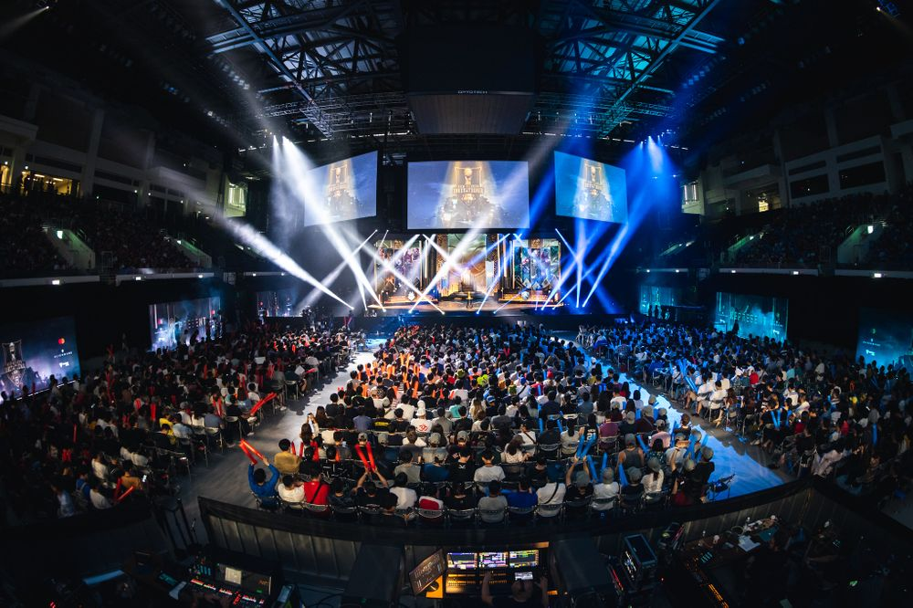
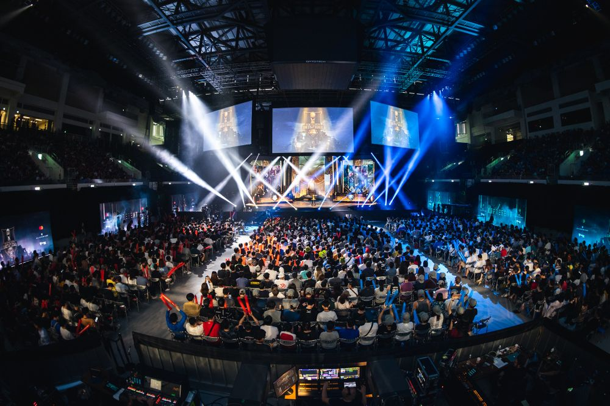

각 나라의 리그 오브 레전드 1부 리그 전기 시즌[1] 우승팀이 모여 겨루는 중간 점검 성격의 국제 대회.
리그 오브 레전드의 국제 대회로 라이엇에서 모든 리그의 일정을 동일화시키면서 만들어졌다.
유래는 리그 오브 레전드 올스타 2014에서 개최된 올스타 인비테이셔널이지만,
맘편히 즐길 수 있는 이벤트성 대회로 만들고 싶었던 라이엇의 의도와는 달리 올스타전이 지나치게 진지한 지역 대항전 성격을 띠면서 별도의 대회로 분리하였다.
2016 시즌까지는 한국, 북미, 유럽, 중국, 대만의 각 리그 우승팀과 여기에 와일드카드 우승 팀을 더해 총 6팀이 경기를 치르는 다소 조촐한 방식이었으나,
2017 시즌 국제 대회 개편안에 따라 전 세계 13개 지역의 우승팀들이 참가하여 총 13개 팀이 여러 단계에 걸쳐 경기를 치루는 식으로 확대되었다.
이후 2018 시즌에 베트남 지역의 프로리그가 새롭게 창설되면서, 14개 팀으로 늘어났다.
각 리그의 우승팀만 참가하며, 모든 팀과 예외 없이 경기를 치르기 때문에 본선 그룹 스테이지는 월드 챔피언십보다 난이도가 높다는 의견이 많이 나온다.
월드 챔피언십의 경우 조 추첨을 통해 강팀을 피하거나, 상대적으로 수준 낮은 리그의 2~3위 팀과 같이 배정될 수 있기 때문.
물론 토너먼트부터는 수준 높은 리그에서만 2~3팀씩 올라오며, MSI에 비해 5전제를 1번 더 치르므로(8강~결승) 월드 챔피언십이 일반적으로 더 어렵다.
팀당 데려갈 수 있는 예비 선수는 1명으로 한정되어 있으며, 코치가 밴픽에 참여할 수 있다.